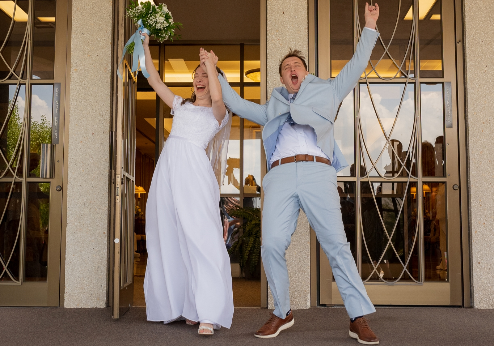

I was born on February 4th, 2000 in Rexburg, ID. From there, I lived for 16 years in Aloha, OR, and then moved to Chandler, AZ, just before my Junior year
in high school. From July 2018 - March 2020, I served my mission in the Indiana Indianapolis and Peru Lima East missions. I came to BYU for the Fall 2020
semester, then married my wife, Valerie, in August 2021 in the Provo Temple. Now, I am working towards a degree in Information Systems, which I will use it to
be a Healthcare Administrator and to open up a state of the art hospital that reimagines how tech and medicine can be combined to provide the best care
possible to the patients.
Growing up, playing baseball was by far my favorite hobby and I was a pitcher for my high school varsity and summer ball teams. Now that I am not playing anymore, my favorite hobby is to watch and study baseball because of how much I love the game. If you want to watch it, here is a video of me pitching way back when, so it might be a little whacky. Also, it might be worth mentioning that my favorite baseball team has been the LA Dodgers for as long as I can remember. No, I am not a bandwagoner, and yes, I do more or less understand the debate as to whether our championship in 2020 was legit because of the shortened season... but to be fair, your team could have done it too, so please stop complaining ;-). As for other sports, I follow college football every year and get pretty in to it while also being obsessed with hockey.
Growing up, playing baseball was by far my favorite hobby and I was a pitcher for my high school varsity and summer ball teams. Now that I am not playing anymore, my favorite hobby is to watch and study baseball because of how much I love the game. If you want to watch it, here is a video of me pitching way back when, so it might be a little whacky. Also, it might be worth mentioning that my favorite baseball team has been the LA Dodgers for as long as I can remember. No, I am not a bandwagoner, and yes, I do more or less understand the debate as to whether our championship in 2020 was legit because of the shortened season... but to be fair, your team could have done it too, so please stop complaining ;-). As for other sports, I follow college football every year and get pretty in to it while also being obsessed with hockey.